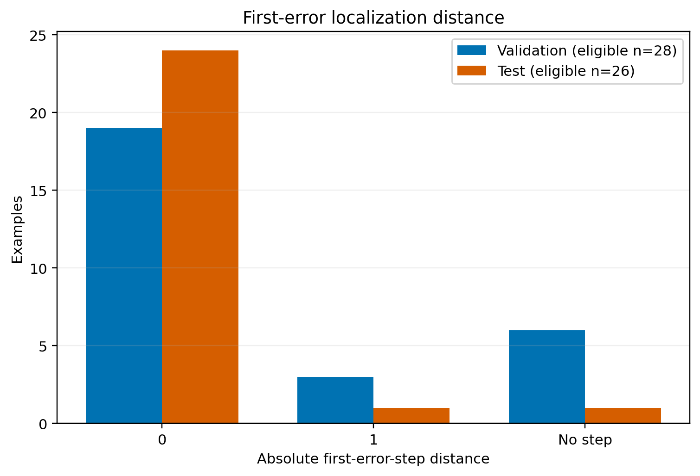
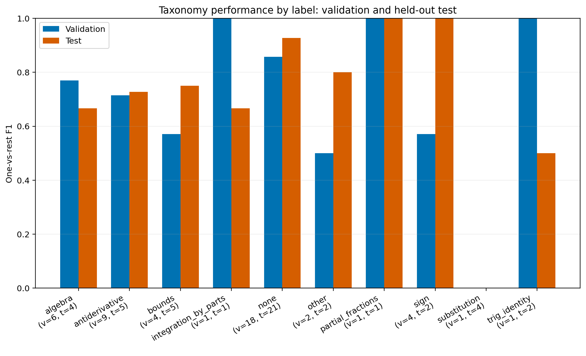
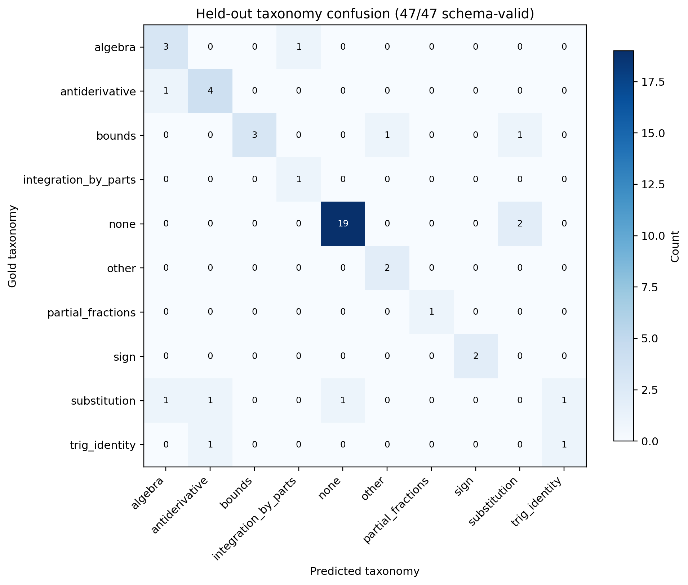
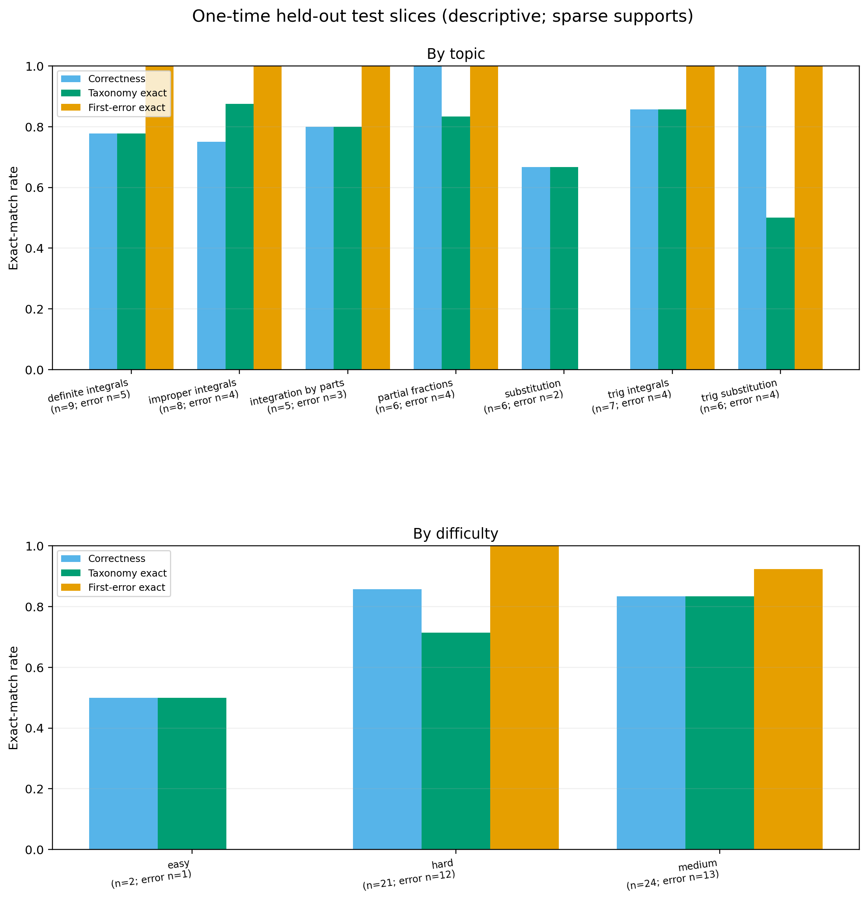
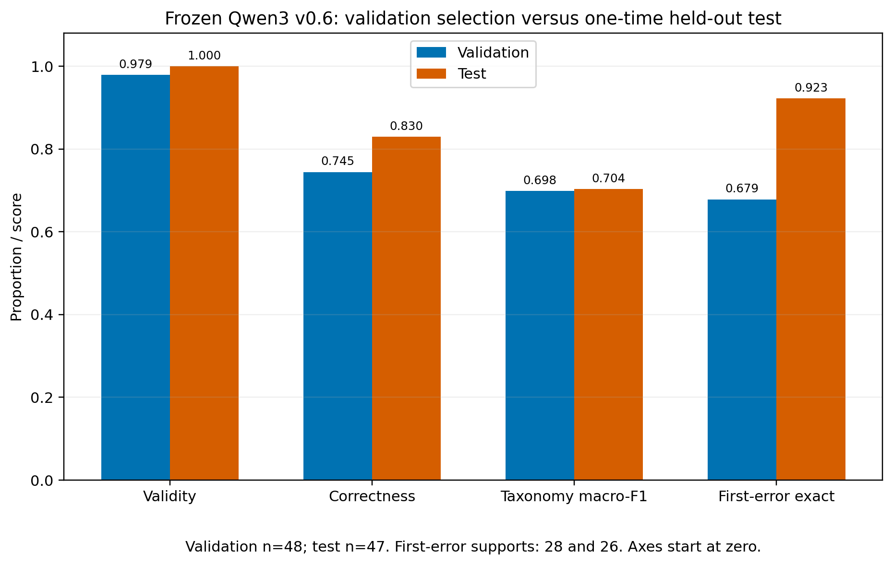

# MURL v0.8 one-time final-test reproducibility This companion notebook reproduces the final-test tables and figures **from archived outputs only**. It does not load the model, tokenize held-out examples, run generation, or invoke the evaluator. The one-time generation and scoring invariants are asserted from the immutable archive manifest. Run from the repository root after placing the three ignored run artifacts in `runs/final/` as listed in the final-test report.
# Archive-only regeneration; this helper contains no model or evaluator call. import subprocess, sys subprocess.run([sys.executable, 'scripts/v08_final_test_artifacts.py'], check=True)
{
"result": "PASS",
"test_valid": 47,
"test_correct": 39,
"final_zip_sha256": "a14ef576c8becd41de3f38ffd9edc7a9adfc6b267679cfa21e28e97a757c2d9c"
}
import csv
from pathlib import Path
report_dir = Path('reports/v0.8-final-test')
with (report_dir / 'summary.csv').open() as handle:
summary = list(csv.DictReader(handle))
for row in summary:
print(f"{row['split']}: validity={row['valid']}/{row['examples']}, correctness={row['correct']}/{row['valid']} valid, taxonomy macro-F1={float(row['taxonomy_macro_f1']):.6f}, first-error exact={round(float(row['first_error_exact']) * int(row['first_error_support']))}/{row['first_error_support']}")validation: validity=47/48, correctness=35/47 valid, taxonomy macro-F1=0.698352, first-error exact=19/28 test: validity=47/47, correctness=39/47 valid, taxonomy macro-F1=0.703744, first-error exact=24/26
tables = sorted(path.name for path in report_dir.glob('*.csv'))
figures = sorted(path.name for path in (report_dir / 'figures').glob('*.png'))
print('Generated tables:', ', '.join(['artifact-manifest.json'] + tables))
print('Generated figures:', ', '.join(figures))Generated tables: artifact-manifest.json, per-label-f1.csv, summary.csv, taxonomy-confusion.csv, test-slices.csv Generated figures: first-error-distance.png, per-label-validation-vs-test.png, test-taxonomy-confusion.png, test-topic-difficulty-slices.png, validation-vs-test.png
## Interpretation guardrails Validation selected the model; the 47-example held-out test estimates its frozen performance. Slice and label results are descriptive because several supports are very small. No value in this notebook is used to tune or reselect a model.




